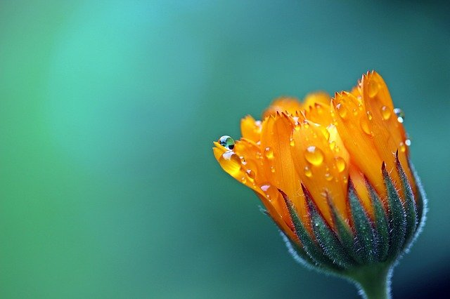
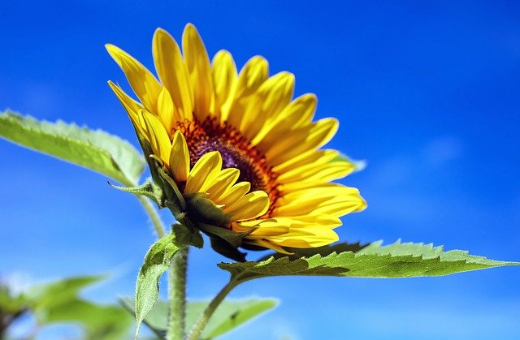
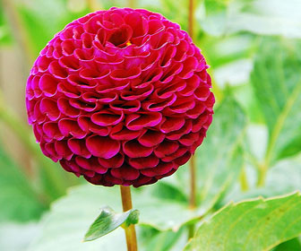
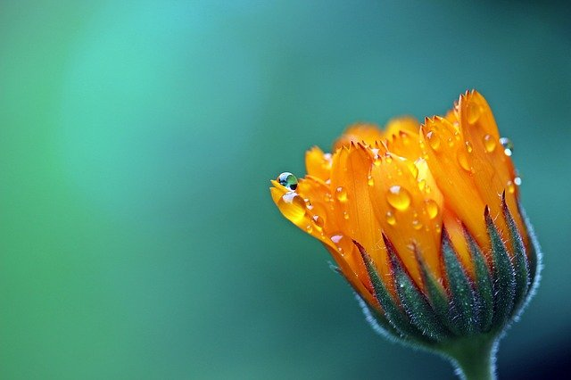
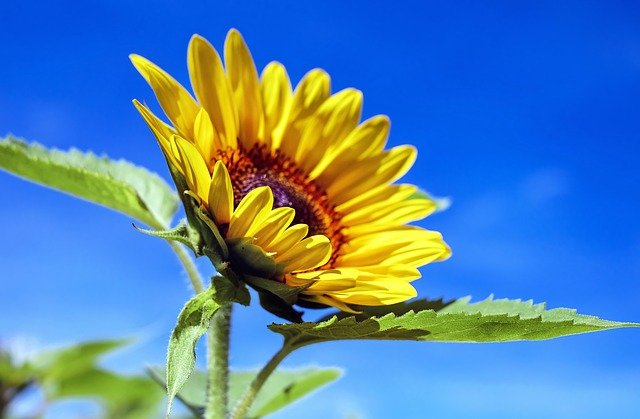
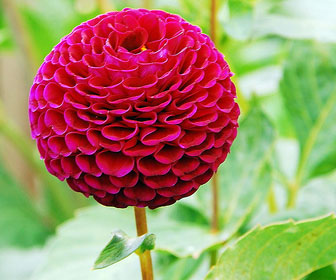
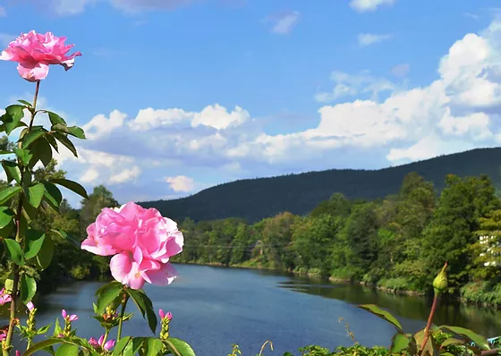
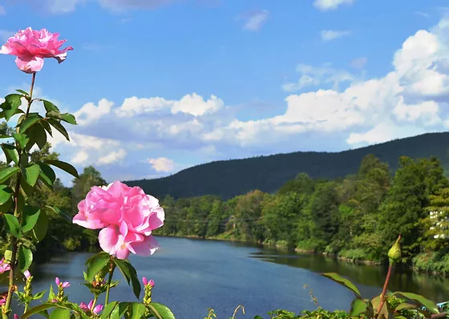

 



Also known as Love Lies Bleeding, this plant has exotic looking foliage and tassels that are often blood-red in color. You can find plants with a range of leaf colors, from bronze to green. They are great as potted plants and can also be used in flower arrangements either cut or dried.
The Aster or the Michaelmas Daisy is a hardy perennial that blooms between late summer and fall. Numerous species exist, but the most commonly grown is the Aster novi-belgii, with blue, violet, pink, or white flowers, to mention a few colors it comes in. This plant is easy to grow and comes in a range of sizes.
The Balloon Flower also goes by the name Platycodon or the Chinese bellflower. This plant is an herb and perennial with a short flowering period. The flowers are typically a shade of blue or white or pale pink. These spread slowly and tend to be compact, so you’ll want to mark their position to avoid removing them as a weed.
The Lewesia plant is native to America. The plant grows best in rocky environments or on well-drained slopes, and the plants are typically low growing. The flowers are bright and funnel shaped, with most blossoms a pink or magenta color. These plants are known for hybridizing readily, which can produce interesting variations.